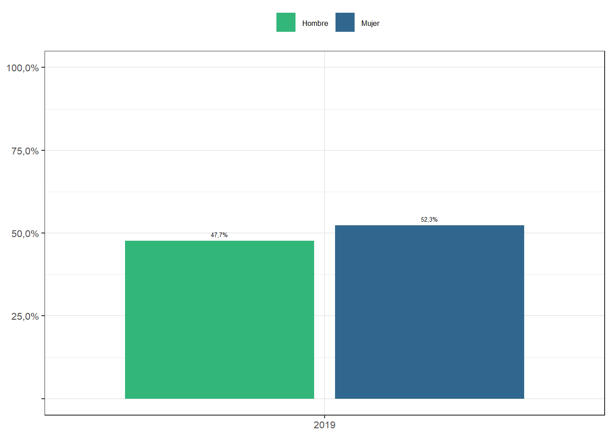
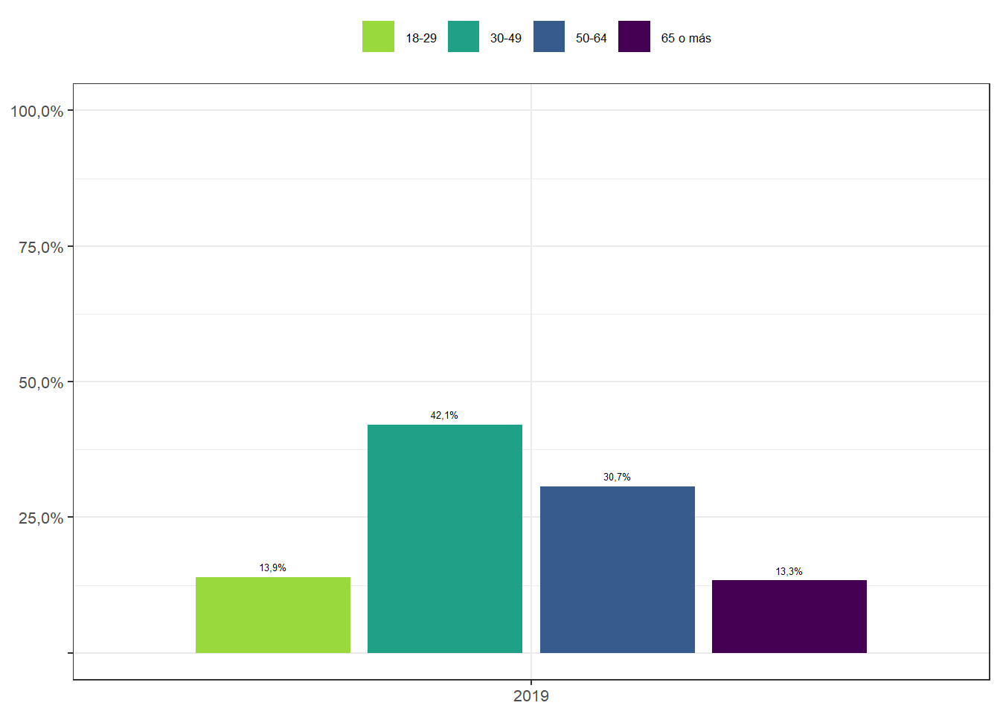
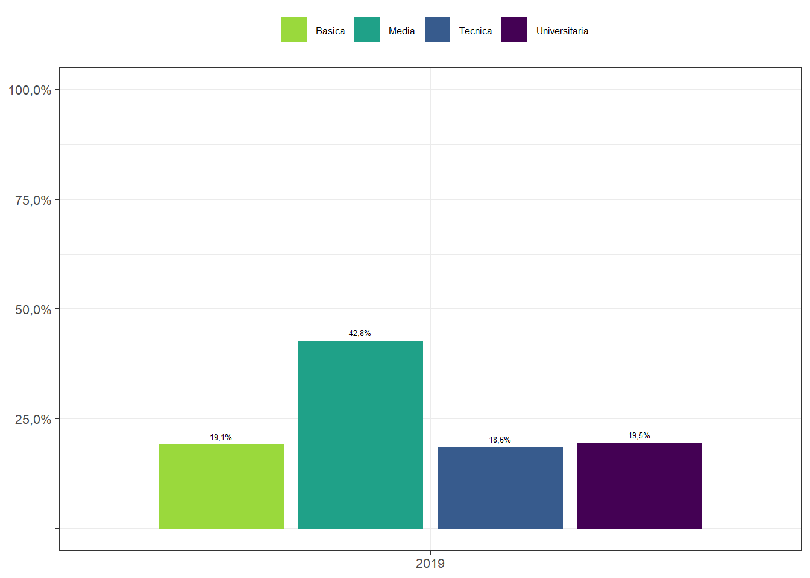

6.1 Cambio individual
6.1.1 Distribución de Sub-Muestra de Participantes en las cuatro olas ELSOC según sexo

Nota: Resultados Ponderados (con Diseño Muestral Complejo)
6.1.2 Distribución de Sub-Muestra de Participantes en las cuatro olas ELSOC según edad

Nota: Resultados Ponderados (con Diseño Muestral Complejo)
6.1.3 Distribución de Sub-muestra de Participantes en las cuatro olas ELSOC según Nivel educacional

Nota: Resultados Ponderados (con Diseño Muestral Complejo)